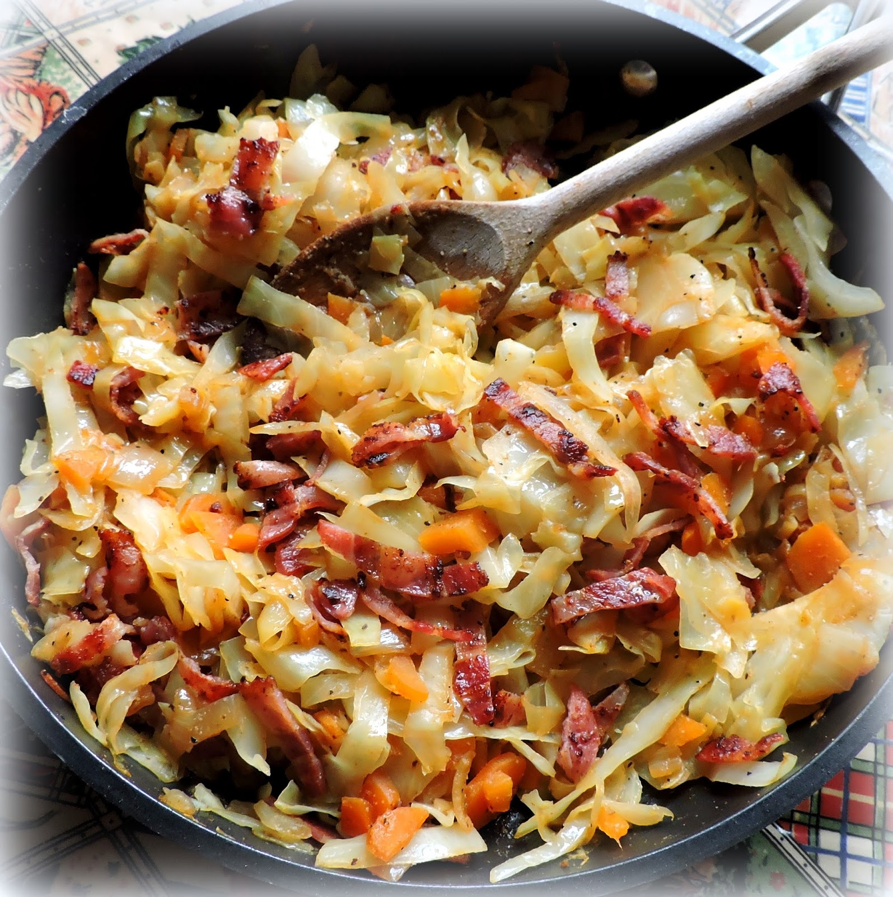

Fried Cabbage with Bacon

My family loves this fried cabbage recipe. I serve it with homemade cornbread. Make a lot, because there will not be any left.
Ingredients
- 5 thick bacon strips, cut into small pieces
- 1 large onion, chopped
- 2 cloves garlic, minced, or more to taste
- 1 medium head cabbage, shredded or chopped
- 1 teaspoon paprika
- 1 pinch white sugar (Optional)
- salt to taste
- ground black pepper to taste
Steps
- Cook bacon in a skillet over medium heat until crisp, about 5 minutes. Remove bacon and set aside. Add onion and garlic and cook in bacon grease until onion is soft and translucent, about 5 minutes. Stir in cabbage, paprika, sugar, salt, and pepper; mix to combine. Cook for about 10 minutes.
- Stir cooked bacon into the skillet with the cabbage mixture. Simmer over low heat until cabbage reaches the desired consistency, 20 to 30 minutes. Serve hot or warm.